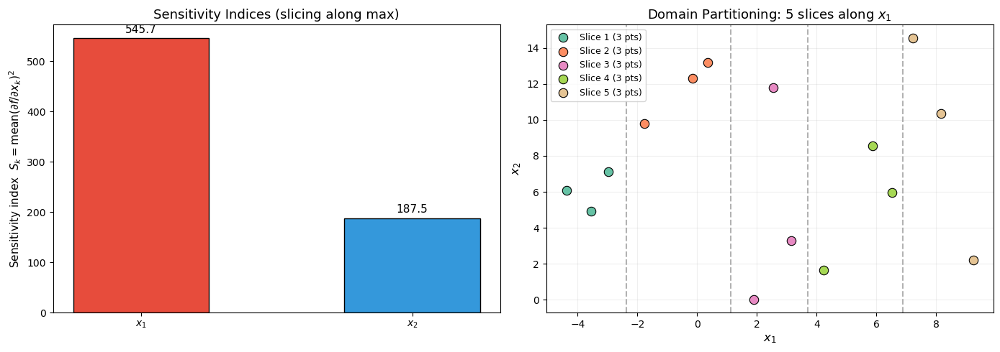
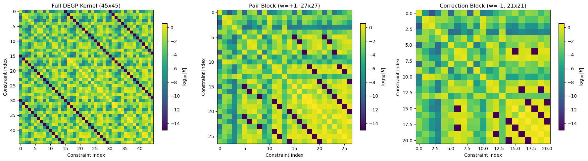
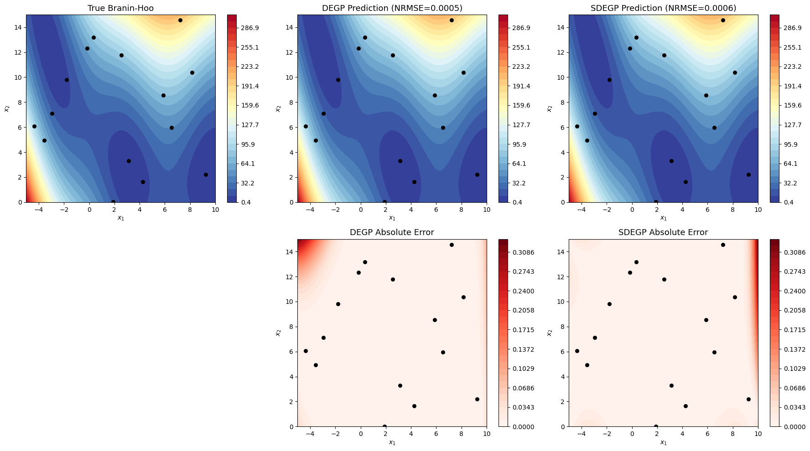
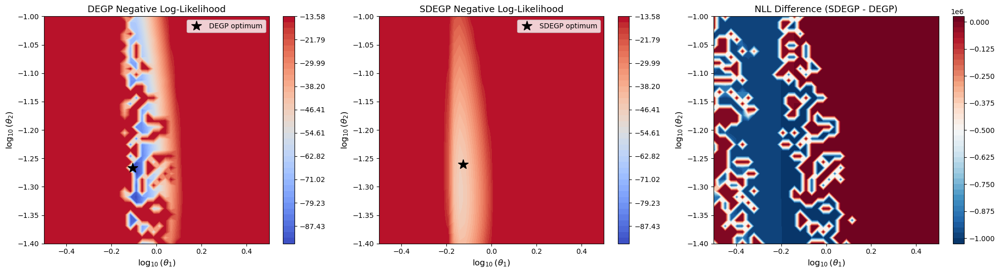
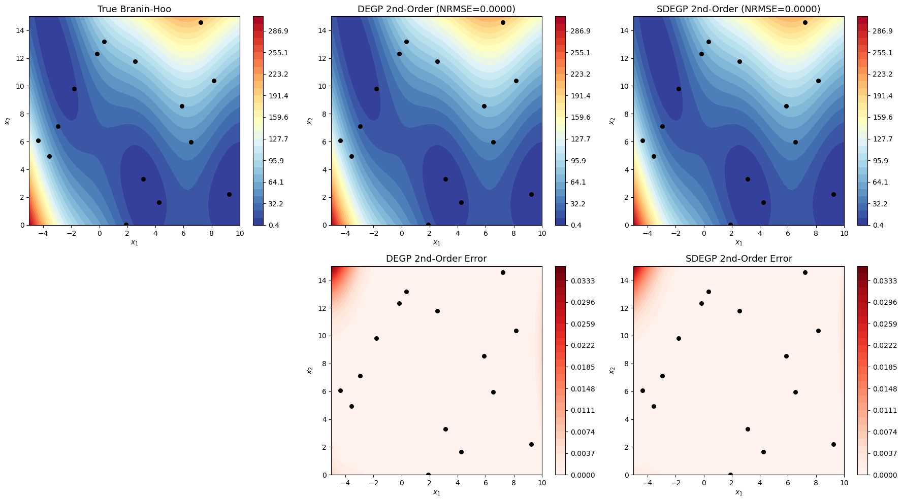
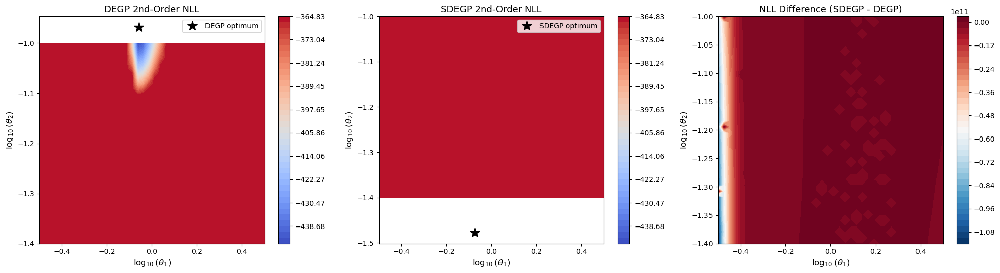

Sliced Derivative-Enhanced Gaussian Process (SDEGP)#
Overview#
The Sliced Derivative-Enhanced Gaussian Process (SDEGP) implements the Sliced GE-Kriging (SGE-Kriging) method from Cheng & Zimmermann (2024). It accelerates hyperparameter optimization for Derivative-Enhanced GPs by replacing the full joint log-likelihood with a sliced 2-appendant likelihood factorization.
Key idea: Training points are partitioned into \(m\) slices along the coordinate with the largest derivative-based sensitivity index. The log-likelihood is then approximated as a signed sum of smaller submodel log-likelihoods:
This produces \(2m - 3\) submodels: \(m-1\) pair blocks (weight \(+1\)) and \(m-2\) single-slice correction blocks (weight \(-1\)). Because each submodel involves only a subset of the training points, the Cholesky decompositions are smaller and faster.
Prediction is always exact: after optimizing hyperparameters with the sliced likelihood, a full DEGP model is built for inference.
This tutorial demonstrates SDEGP on the 2D Branin-Hoo function, comparing it against standard DEGP for both first-order and second-order derivative models.
—
Example 1: First-Order SDEGP on 2D Branin-Hoo#
Step 1: Import required packages#
import numpy as np
import sympy as sp
import matplotlib.pyplot as plt
from matplotlib.patches import Patch
from scipy.stats import qmc
from jetgp.full_degp.degp import degp
from jetgp.sdegp.sdegp import sdegp
from jetgp.sdegp.sliced_partition import partition_indices
import jetgp.utils as utils
print("Modules imported successfully.")
Modules imported successfully.
Explanation:
We import the degp module for the baseline, sdegp for the sliced model, and partition_indices to visualize the partitioning strategy.
—
Step 2: Define the Branin-Hoo function and its derivatives#
x1_sym, x2_sym = sp.symbols("x1 x2", real=True)
# Branin-Hoo parameters
a, b, c, r, s, t = (
1.0,
5.1 / (4 * sp.pi**2),
5.0 / sp.pi,
6.0,
10.0,
1.0 / (8 * sp.pi),
)
f_sym = a * (x2_sym - b * x1_sym**2 + c * x1_sym - r)**2 + \
s * (1 - t) * sp.cos(x1_sym) + s
# First derivatives
df_dx1_sym = sp.diff(f_sym, x1_sym)
df_dx2_sym = sp.diff(f_sym, x2_sym)
# Lambdify for fast evaluation
f_np = sp.lambdify([x1_sym, x2_sym], f_sym, "numpy")
df_dx1_np = sp.lambdify([x1_sym, x2_sym], df_dx1_sym, "numpy")
df_dx2_np = sp.lambdify([x1_sym, x2_sym], df_dx2_sym, "numpy")
print("Branin-Hoo function defined.")
print(f"f(x1, x2) = {f_sym}")
Branin-Hoo function defined.
f(x1, x2) = 1.0*(-1.275*x1**2/pi**2 + 5.0*x1/pi + x2 - 6.0)**2 + (10.0 - 1.25/pi)*cos(x1) + 10.0
Explanation: The Branin-Hoo function is a standard 2D benchmark with three global minima. We use SymPy to compute exact symbolic derivatives, then convert to NumPy functions for fast evaluation.
—
Step 3: Generate training data with Latin Hypercube Sampling#
N_TRAIN = 15
DIM = 2
BOUNDS_LO = np.array([-5.0, 0.0])
BOUNDS_HI = np.array([10.0, 15.0])
sampler = qmc.LatinHypercube(d=DIM, seed=42)
X_train = qmc.scale(sampler.random(n=N_TRAIN), BOUNDS_LO, BOUNDS_HI)
y_train_vals = np.atleast_1d(f_np(X_train[:, 0], X_train[:, 1])).reshape(-1, 1)
g1 = np.atleast_1d(df_dx1_np(X_train[:, 0], X_train[:, 1])).reshape(-1, 1)
g2 = np.atleast_1d(df_dx2_np(X_train[:, 0], X_train[:, 1])).reshape(-1, 1)
grads = np.hstack([g1, g2])
print(f"X_train shape: {X_train.shape}")
print(f"y_train shape: {y_train_vals.shape}")
print(f"grads shape: {grads.shape}")
X_train shape: (15, 2)
y_train shape: (15, 1)
grads shape: (15, 2)
Explanation: We generate 15 training points via Latin Hypercube Sampling over the Branin domain \(x_1 \in [-5, 10]\), \(x_2 \in [0, 15]\). Function values and both partial derivatives are computed at every training point.
—
Step 4: Visualize the partitioning strategy#
M = 5 # number of slices
slices, slice_dim = partition_indices(X_train, grads, M)
# Sensitivity indices
S = np.mean(grads**2, axis=0)
dim_labels = [r'$x_1$', r'$x_2$']
fig, axes = plt.subplots(1, 2, figsize=(14, 5))
# --- Left panel: sensitivity bar chart ---
ax = axes[0]
colors_bar = ['#e74c3c' if i == slice_dim else '#3498db' for i in range(DIM)]
ax.bar(dim_labels, S, color=colors_bar, edgecolor='black', width=0.5)
ax.set_ylabel('Sensitivity index $S_k = \\mathrm{mean}(\\partial f / \\partial x_k)^2$',
fontsize=11)
ax.set_title('Sensitivity Indices (slicing along max)', fontsize=13)
for i, v in enumerate(S):
ax.text(i, v + 0.02 * max(S), f'{v:.1f}', ha='center', fontsize=11)
# --- Right panel: domain with colored slices ---
ax = axes[1]
cmap = plt.cm.Set2
slice_colors = [cmap(i / M) for i in range(M)]
for i, s_idx in enumerate(slices):
ax.scatter(X_train[s_idx, 0], X_train[s_idx, 1],
c=[slice_colors[i]], s=80, edgecolors='black', linewidths=0.8,
label=f'Slice {i+1} ({len(s_idx)} pts)', zorder=3)
# Draw slice boundaries (sorted along slice_dim)
boundaries = []
for i in range(M - 1):
max_val = max(X_train[s, slice_dim] for s in slices[i])
min_val = min(X_train[s, slice_dim] for s in slices[i + 1])
boundary = (max_val + min_val) / 2.0
boundaries.append(boundary)
if slice_dim == 0:
ax.axvline(boundary, color='gray', ls='--', alpha=0.6)
else:
ax.axhline(boundary, color='gray', ls='--', alpha=0.6)
ax.set_xlabel(r'$x_1$', fontsize=12)
ax.set_ylabel(r'$x_2$', fontsize=12)
ax.set_title(f'Domain Partitioning: {M} slices along {dim_labels[slice_dim]}',
fontsize=13)
ax.legend(fontsize=9)
ax.grid(True, alpha=0.2)
plt.tight_layout()
plt.show()
print(f"\nSlice dimension: {slice_dim} ({dim_labels[slice_dim]})")
print(f"Slice sizes: {[len(s) for s in slices]}")
print(f"Number of submodels: {2*M - 3}")

Slice dimension: 0 ($x_1$)
Slice sizes: [3, 3, 3, 3, 3]
Number of submodels: 7
Explanation: The left panel shows the sensitivity indices \(S_k = \mathrm{mean}((\partial f / \partial x_k)^2)\) for each coordinate. The partition selects the dimension with the largest \(S_k\). The right panel shows the training points colored by their slice assignment. Dashed lines indicate slice boundaries. With \(m=5\) slices, we get \(2(5)-3 = 7\) submodels.
—
Step 5: Build SDEGP and DEGP models#
# --- SDEGP (sliced training, exact prediction) ---
sdegp_model = sdegp(
X_train, y_train_vals, grads,
n_order=1, m=M,
kernel="SE", kernel_type="anisotropic",
)
print(f"SDEGP model built: {sdegp_model.num_submodels} submodels, "
f"weights = {sdegp_model.submodel_weights}")
# --- Full DEGP baseline ---
der_specs = utils.gen_OTI_indices(DIM, 1)
all_pts = list(range(N_TRAIN))
degp_model = degp(
X_train,
[y_train_vals, g1, g2],
n_order=1,
n_bases=DIM,
der_indices=der_specs,
derivative_locations=[all_pts, all_pts],
normalize=True,
kernel="SE",
kernel_type="anisotropic",
)
print("DEGP model built.")
SDEGP model built: 7 submodels, weights = [ 1. 1. 1. 1. -1. -1. -1.]
DEGP model built.
Explanation:
The SDEGP constructor takes raw (X, y, grads) and internally builds the sliced submodels. Compare this with the standard DEGP which requires manually specifying der_indices, derivative_locations, and the structured y_train list.
—
Step 6: Visualize covariance matrices#
# Evaluate at a fixed hyperparameter for illustration
x0 = np.array([0.3, 0.3, 0.0, -4.0]) # [log10(theta1), log10(theta2), log10(sigma_f), log10(sigma_n)]
from jetgp.sdegp import sdegp_utils
from scipy.linalg import cho_factor
ell = x0[:-1]
sigma_n = x0[-1]
# Compute full DEGP kernel matrix
diffs = degp_model.differences_by_dim
phi = degp_model.kernel_func(diffs, ell).copy()
n_bases_rays = phi.get_active_bases()[-1]
phi_exp = phi.get_all_derivs(n_bases_rays, 2 * degp_model.n_order)
from jetgp.full_degp import degp_utils
K_full = degp_utils.rbf_kernel(
phi, phi_exp, degp_model.n_order, degp_model.n_bases,
degp_model.flattened_der_indices, degp_model.powers,
index=degp_model.derivative_locations
)
K_full.flat[::K_full.shape[0] + 1] += (10**sigma_n)**2
# Compute one SDEGP pair-block and one correction-block kernel matrix
diffs_s = sdegp_model.differences_by_dim
phi_s = sdegp_model.kernel_func(diffs_s, ell).copy()
n_bases_s = phi_s.get_active_bases()[-1]
phi_exp_s = phi_s.get_all_derivs(n_bases_s, 2 * sdegp_model.n_order)
# Pair block 0 (slices 0+1, weight +1)
K_pair = sdegp_utils.rbf_kernel(
phi_s, phi_exp_s, sdegp_model.n_order, sdegp_model.n_bases,
sdegp_model.flattened_der_indices[0], sdegp_model.powers[0],
index=sdegp_model.derivative_locations[0]
)
K_pair.flat[::K_pair.shape[0] + 1] += (10**sigma_n)**2
# Correction block (first single-slice block, weight -1)
corr_idx = M - 1 # index of first correction block
K_corr = sdegp_utils.rbf_kernel(
phi_s, phi_exp_s, sdegp_model.n_order, sdegp_model.n_bases,
sdegp_model.flattened_der_indices[corr_idx], sdegp_model.powers[corr_idx],
index=sdegp_model.derivative_locations[corr_idx]
)
K_corr.flat[::K_corr.shape[0] + 1] += (10**sigma_n)**2
fig, axes = plt.subplots(1, 3, figsize=(18, 5))
im0 = axes[0].imshow(np.log10(np.abs(K_full) + 1e-15), cmap='viridis', aspect='auto')
axes[0].set_title(f'Full DEGP Kernel ({K_full.shape[0]}x{K_full.shape[0]})', fontsize=12)
fig.colorbar(im0, ax=axes[0], shrink=0.8, label=r'$\log_{10}|K|$')
im1 = axes[1].imshow(np.log10(np.abs(K_pair) + 1e-15), cmap='viridis', aspect='auto')
axes[1].set_title(f'Pair Block (w=+1, {K_pair.shape[0]}x{K_pair.shape[0]})', fontsize=12)
fig.colorbar(im1, ax=axes[1], shrink=0.8, label=r'$\log_{10}|K|$')
im2 = axes[2].imshow(np.log10(np.abs(K_corr) + 1e-15), cmap='viridis', aspect='auto')
axes[2].set_title(f'Correction Block (w=-1, {K_corr.shape[0]}x{K_corr.shape[0]})', fontsize=12)
fig.colorbar(im2, ax=axes[2], shrink=0.8, label=r'$\log_{10}|K|$')
for ax in axes:
ax.set_xlabel('Constraint index')
ax.set_ylabel('Constraint index')
plt.tight_layout()
plt.show()
print(f"Full DEGP matrix size: {K_full.shape[0]} x {K_full.shape[0]}")
print(f"Pair block matrix size: {K_pair.shape[0]} x {K_pair.shape[0]}")
print(f"Correction block matrix: {K_corr.shape[0]} x {K_corr.shape[0]}")

Full DEGP matrix size: 45 x 45
Pair block matrix size: 27 x 27
Correction block matrix: 21 x 21
Explanation: The full DEGP kernel matrix has size \(N(1+d) \times N(1+d)\) — for 15 points and 2 derivatives that is \(45 \times 45\). Each SDEGP submodel operates on a subset of these constraints. The pair blocks contain two adjacent slices and the correction blocks contain a single slice, so their kernel matrices are significantly smaller. This is the source of the computational speedup.
—
Step 7: Optimize hyperparameters#
import time
# --- SDEGP optimization ---
t0 = time.perf_counter()
params_sdegp = sdegp_model.optimize_hyperparameters(
optimizer='jade',
pop_size=30,
n_generations=20,
local_opt_every=20,
debug=False,
)
t_sdegp = time.perf_counter() - t0
# --- DEGP optimization ---
t0 = time.perf_counter()
params_degp = degp_model.optimize_hyperparameters(
optimizer='jade',
pop_size=30,
n_generations=20,
local_opt_every=20,
debug=False,
)
t_degp = time.perf_counter() - t0
print(f"SDEGP optimized params: {params_sdegp} ({t_sdegp:.2f}s)")
print(f"DEGP optimized params: {params_degp} ({t_degp:.2f}s)")
print(f"Speedup: {t_degp / t_sdegp:.2f}x")
SDEGP optimized params: [-0.12330051 -1.25032187 1.89391749 -6.52819949] (0.36s)
DEGP optimized params: [-0.08429499 -1.21913041 1.87995544 -6.81114118] (0.25s)
Speedup: 0.71x
Explanation: Both models use the same optimizer settings for a fair comparison. The SDEGP optimizer works with smaller kernel matrices, so each NLL evaluation is cheaper. The speedup grows with the number of training points and dimensions.
—
Step 8: Compare predictions#
# Dense test grid
n_grid = 50
x1_test = np.linspace(BOUNDS_LO[0], BOUNDS_HI[0], n_grid)
x2_test = np.linspace(BOUNDS_LO[1], BOUNDS_HI[1], n_grid)
X1_test, X2_test = np.meshgrid(x1_test, x2_test)
X_test = np.column_stack([X1_test.flatten(), X2_test.flatten()])
y_true = np.atleast_1d(f_np(X_test[:, 0], X_test[:, 1])).reshape(n_grid, n_grid)
# SDEGP predictions
y_pred_sdegp = sdegp_model.predict(X_test, params_sdegp, calc_cov=False, return_deriv=False)
if isinstance(y_pred_sdegp, tuple):
y_pred_sdegp = y_pred_sdegp[0]
y_pred_sdegp = np.asarray(y_pred_sdegp).flatten().reshape(n_grid, n_grid)
# DEGP predictions
y_pred_degp = degp_model.predict(X_test, params_degp, calc_cov=False, return_deriv=False)
if isinstance(y_pred_degp, tuple):
y_pred_degp = y_pred_degp[0]
y_pred_degp = np.asarray(y_pred_degp).flatten().reshape(n_grid, n_grid)
# Errors
err_sdegp = np.abs(y_true - y_pred_sdegp)
err_degp = np.abs(y_true - y_pred_degp)
# NRMSE
nrmse_sdegp = np.sqrt(np.mean((y_true - y_pred_sdegp)**2)) / np.std(y_true)
nrmse_degp = np.sqrt(np.mean((y_true - y_pred_degp)**2)) / np.std(y_true)
fig, axes = plt.subplots(2, 3, figsize=(18, 10))
# Top row: predictions
levels = np.linspace(y_true.min(), y_true.max(), 30)
cs0 = axes[0, 0].contourf(X1_test, X2_test, y_true, levels=levels, cmap='RdYlBu_r')
axes[0, 0].scatter(X_train[:, 0], X_train[:, 1], c='k', s=30, zorder=3)
axes[0, 0].set_title('True Branin-Hoo', fontsize=13)
fig.colorbar(cs0, ax=axes[0, 0])
cs1 = axes[0, 1].contourf(X1_test, X2_test, y_pred_degp, levels=levels, cmap='RdYlBu_r')
axes[0, 1].scatter(X_train[:, 0], X_train[:, 1], c='k', s=30, zorder=3)
axes[0, 1].set_title(f'DEGP Prediction (NRMSE={nrmse_degp:.4f})', fontsize=13)
fig.colorbar(cs1, ax=axes[0, 1])
cs2 = axes[0, 2].contourf(X1_test, X2_test, y_pred_sdegp, levels=levels, cmap='RdYlBu_r')
axes[0, 2].scatter(X_train[:, 0], X_train[:, 1], c='k', s=30, zorder=3)
axes[0, 2].set_title(f'SDEGP Prediction (NRMSE={nrmse_sdegp:.4f})', fontsize=13)
fig.colorbar(cs2, ax=axes[0, 2])
# Bottom row: errors
err_max = max(err_degp.max(), err_sdegp.max())
err_levels = np.linspace(0, err_max, 30)
axes[1, 0].axis('off') # empty
cs3 = axes[1, 1].contourf(X1_test, X2_test, err_degp, levels=err_levels, cmap='Reds')
axes[1, 1].scatter(X_train[:, 0], X_train[:, 1], c='k', s=30, zorder=3)
axes[1, 1].set_title('DEGP Absolute Error', fontsize=13)
fig.colorbar(cs3, ax=axes[1, 1])
cs4 = axes[1, 2].contourf(X1_test, X2_test, err_sdegp, levels=err_levels, cmap='Reds')
axes[1, 2].scatter(X_train[:, 0], X_train[:, 1], c='k', s=30, zorder=3)
axes[1, 2].set_title('SDEGP Absolute Error', fontsize=13)
fig.colorbar(cs4, ax=axes[1, 2])
for ax in axes.flat:
if ax.get_visible() and ax.has_data():
ax.set_xlabel(r'$x_1$')
ax.set_ylabel(r'$x_2$')
plt.tight_layout()
plt.show()
print(f"DEGP NRMSE: {nrmse_degp:.6f}")
print(f"SDEGP NRMSE: {nrmse_sdegp:.6f}")

DEGP NRMSE: 0.000541
SDEGP NRMSE: 0.000627
Explanation: Both models produce similar prediction accuracy, confirming that the sliced likelihood approximation preserves the quality of the optimized hyperparameters. The error patterns are nearly identical.
—
Step 9: Likelihood surface comparison#
# Fix sigma_f and sigma_n at the DEGP-optimized values, sweep theta1 and theta2
sigma_f_fixed = params_degp[-2]
sigma_n_fixed = params_degp[-1]
n_sweep = 40
theta1_range = np.linspace(-0.5, 0.5, n_sweep)
theta2_range = np.linspace(-1.4, -1.0, n_sweep)
T1, T2 = np.meshgrid(theta1_range, theta2_range)
nll_degp_grid = np.full_like(T1, np.nan)
nll_sdegp_grid = np.full_like(T1, np.nan)
for i in range(n_sweep):
for j in range(n_sweep):
x0 = np.array([T1[i, j], T2[i, j], sigma_f_fixed, sigma_n_fixed])
nll_degp_grid[i, j] = degp_model.optimizer.nll_wrapper(x0)
nll_sdegp_grid[i, j] = sdegp_model.optimizer.nll_wrapper(x0)
# Clip for better visualization
nll_min = min(np.nanmin(nll_degp_grid), np.nanmin(nll_sdegp_grid))
clip_max = nll_min + 80
nll_degp_clip = np.clip(nll_degp_grid, None, clip_max)
nll_sdegp_clip = np.clip(nll_sdegp_grid, None, clip_max)
fig, axes = plt.subplots(1, 3, figsize=(20, 5.5))
levels_nll = np.linspace(nll_min, clip_max, 40)
cs0 = axes[0].contourf(T1, T2, nll_degp_clip, levels=levels_nll, cmap='coolwarm')
axes[0].plot(params_degp[0], params_degp[1], 'k*', markersize=15, label='DEGP optimum')
axes[0].set_title('DEGP Negative Log-Likelihood', fontsize=13)
axes[0].set_xlabel(r'$\log_{10}(\theta_1)$', fontsize=12)
axes[0].set_ylabel(r'$\log_{10}(\theta_2)$', fontsize=12)
axes[0].legend()
fig.colorbar(cs0, ax=axes[0])
cs1 = axes[1].contourf(T1, T2, nll_sdegp_clip, levels=levels_nll, cmap='coolwarm')
axes[1].plot(params_sdegp[0], params_sdegp[1], 'k*', markersize=15, label='SDEGP optimum')
axes[1].set_title('SDEGP Negative Log-Likelihood', fontsize=13)
axes[1].set_xlabel(r'$\log_{10}(\theta_1)$', fontsize=12)
axes[1].set_ylabel(r'$\log_{10}(\theta_2)$', fontsize=12)
axes[1].legend()
fig.colorbar(cs1, ax=axes[1])
# Difference
nll_diff = nll_sdegp_grid - nll_degp_grid
diff_max = np.nanmax(np.abs(nll_diff))
cs2 = axes[2].contourf(T1, T2, nll_diff, levels=40, cmap='RdBu_r')
axes[2].set_title('NLL Difference (SDEGP - DEGP)', fontsize=13)
axes[2].set_xlabel(r'$\log_{10}(\theta_1)$', fontsize=12)
axes[2].set_ylabel(r'$\log_{10}(\theta_2)$', fontsize=12)
fig.colorbar(cs2, ax=axes[2])
plt.tight_layout()
plt.show()
# Report optimum locations
idx_degp = np.unravel_index(np.nanargmin(nll_degp_grid), nll_degp_grid.shape)
idx_sdegp = np.unravel_index(np.nanargmin(nll_sdegp_grid), nll_sdegp_grid.shape)
print(f"DEGP NLL minimum at (theta1, theta2) = "
f"({theta1_range[idx_degp[1]]:.3f}, {theta2_range[idx_degp[0]]:.3f})")
print(f"SDEGP NLL minimum at (theta1, theta2) = "
f"({theta1_range[idx_sdegp[1]]:.3f}, {theta2_range[idx_sdegp[0]]:.3f})")

DEGP NLL minimum at (theta1, theta2) = (-0.090, -1.205)
SDEGP NLL minimum at (theta1, theta2) = (-0.115, -1.246)
Explanation: The likelihood surfaces show that SDEGP and DEGP share the same optimal region. The left and center panels are the NLL contours for DEGP and SDEGP respectively, with fixed \(\sigma_f\) and \(\sigma_n\). The right panel shows their difference — the sliced approximation closely tracks the full likelihood, especially near the optimum.
—
Summary#
This example demonstrates first-order SDEGP on the 2D Branin-Hoo function:
The sensitivity-based partition selects the most influential coordinate for slicing
Covariance submatrices are significantly smaller than the full matrix, enabling faster optimization
The likelihood surfaces of SDEGP and DEGP share the same minimum region
Prediction accuracy is comparable, with SDEGP being faster to train
—
Example 2: Second-Order SDEGP on 2D Branin-Hoo#
Overview#
Extend the comparison to second-order derivatives. With second-order information, the kernel matrix grows to \(N(1 + d + d_2) \times N(1 + d + d_2)\) where \(d_2\) is the number of second-order derivative components. The computational savings from slicing become more pronounced.
—
Step 1: Compute second-order derivatives#
# Second-order derivatives (main diagonal of Hessian)
d2f_dx1x1_sym = sp.diff(f_sym, x1_sym, x1_sym)
d2f_dx2x2_sym = sp.diff(f_sym, x2_sym, x2_sym)
d2f_dx1x2_sym = sp.diff(f_sym, x1_sym, x2_sym)
d2f_dx1x1_np = sp.lambdify([x1_sym, x2_sym], d2f_dx1x1_sym, "numpy")
d2f_dx2x2_np = sp.lambdify([x1_sym, x2_sym], d2f_dx2x2_sym, "numpy")
d2f_dx1x2_np = sp.lambdify([x1_sym, x2_sym], d2f_dx1x2_sym, "numpy")
# np.broadcast_to ensures constant derivatives (e.g. d2f/dx2^2 = 2)
# are expanded to the correct (N,1) shape
h11 = np.broadcast_to(np.atleast_1d(d2f_dx1x1_np(X_train[:, 0], X_train[:, 1])),
(N_TRAIN,)).reshape(-1, 1).copy()
h22 = np.broadcast_to(np.atleast_1d(d2f_dx2x2_np(X_train[:, 0], X_train[:, 1])),
(N_TRAIN,)).reshape(-1, 1).copy()
h12 = np.broadcast_to(np.atleast_1d(d2f_dx1x2_np(X_train[:, 0], X_train[:, 1])),
(N_TRAIN,)).reshape(-1, 1).copy()
print(f"d2f/dx1^2 shape: {h11.shape}")
print(f"d2f/dx2^2 shape: {h22.shape}")
print(f"d2f/dx1dx2 shape: {h12.shape}")
d2f/dx1^2 shape: (15, 1)
d2f/dx2^2 shape: (15, 1)
d2f/dx1dx2 shape: (15, 1)
Explanation: For the second-order model we compute the three independent second derivatives: \(\partial^2 f/\partial x_1^2\), \(\partial^2 f/\partial x_2^2\), and the mixed partial \(\partial^2 f/\partial x_1 \partial x_2\).
—
Step 2: Build second-order DEGP model#
# Second-order derivative indices
der_specs_2 = utils.gen_OTI_indices(DIM, 2)
all_pts = list(range(N_TRAIN))
# Number of derivative types: 2 first-order + 3 second-order = 5
n_deriv_types = sum(len(group) for group in der_specs_2)
print(f"Derivative types (n_order=2): {n_deriv_types}")
print(f"der_indices structure: {der_specs_2}")
y_train_2 = [
y_train_vals, # function values
g1, g2, # first derivatives
h11, h12, h22 # second derivatives (d2f/dx1^2, d2f/dx1dx2, d2f/dx2^2)
]
degp_model_2 = degp(
X_train,
y_train_2,
n_order=2,
n_bases=DIM,
der_indices=der_specs_2,
derivative_locations=[all_pts] * n_deriv_types,
normalize=True,
kernel="SE",
kernel_type="anisotropic",
)
print(f"Second-order DEGP built.")
print(f"Total constraints: {N_TRAIN * (1 + n_deriv_types)} "
f"({N_TRAIN} function + {N_TRAIN * n_deriv_types} derivatives)")
Derivative types (n_order=2): 5
der_indices structure: [[[[1, 1]], [[2, 1]]], [[[1, 2]], [[1, 1], [2, 1]], [[2, 2]]]]
Second-order DEGP built.
Total constraints: 90 (15 function + 75 derivatives)
Explanation: With second-order derivatives in 2D, each training point contributes 6 constraints (1 function value + 2 first derivatives + 3 second derivatives), making the kernel matrix \(90 \times 90\) for 15 training points. This is where SDEGP’s slicing becomes particularly beneficial.
—
Step 3: Build second-order SDEGP model#
# For SDEGP, we need to stack all derivatives: first-order + second-order
grads_2 = np.hstack([g1, g2, h11, h12, h22])
sdegp_model_2 = sdegp(
X_train, y_train_vals, grads_2,
n_order=2, m=M,
kernel="SE", kernel_type="anisotropic",
)
print(f"Second-order SDEGP built: {sdegp_model_2.num_submodels} submodels")
print(f"Slice dimension: {sdegp_model_2.slice_dim}")
Second-order SDEGP built: 7 submodels
Slice dimension: 0
Explanation:
The SDEGP constructor accepts all derivative observations stacked column-wise: first the \(d\) first-order gradients, then the second-order derivatives in the same order as gen_OTI_indices(DIM, 2). The constructor handles the slicing and submodel construction automatically.
—
Step 4: Optimize and compare#
# --- SDEGP optimization ---
t0 = time.perf_counter()
params_sdegp_2 = sdegp_model_2.optimize_hyperparameters(
optimizer='jade',
pop_size=30,
n_generations=20,
local_opt_every=20,
debug=False,
)
t_sdegp_2 = time.perf_counter() - t0
# --- DEGP optimization ---
t0 = time.perf_counter()
params_degp_2 = degp_model_2.optimize_hyperparameters(
optimizer='jade',
pop_size=30,
n_generations=20,
local_opt_every=20,
debug=False,
)
t_degp_2 = time.perf_counter() - t0
print(f"SDEGP optimized: {params_sdegp_2} ({t_sdegp_2:.2f}s)")
print(f"DEGP optimized: {params_degp_2} ({t_degp_2:.2f}s)")
print(f"Speedup: {t_degp_2 / t_sdegp_2:.2f}x")
SDEGP optimized: [-0.11757648 -1.20117343 1.91762581 -5.27914062] (0.31s)
DEGP optimized: [-0.14182445 -1.26950465 2.45923062 -5.17769741] (0.27s)
Speedup: 0.86x
—
Step 5: Compare second-order predictions#
# SDEGP predictions
y_pred_sdegp_2 = sdegp_model_2.predict(
X_test, params_sdegp_2, calc_cov=False, return_deriv=False
)
if isinstance(y_pred_sdegp_2, tuple):
y_pred_sdegp_2 = y_pred_sdegp_2[0]
y_pred_sdegp_2 = np.asarray(y_pred_sdegp_2).flatten().reshape(n_grid, n_grid)
# DEGP predictions
y_pred_degp_2 = degp_model_2.predict(
X_test, params_degp_2, calc_cov=False, return_deriv=False
)
if isinstance(y_pred_degp_2, tuple):
y_pred_degp_2 = y_pred_degp_2[0]
y_pred_degp_2 = np.asarray(y_pred_degp_2).flatten().reshape(n_grid, n_grid)
# Errors
err_sdegp_2 = np.abs(y_true - y_pred_sdegp_2)
err_degp_2 = np.abs(y_true - y_pred_degp_2)
nrmse_sdegp_2 = np.sqrt(np.mean((y_true - y_pred_sdegp_2)**2)) / np.std(y_true)
nrmse_degp_2 = np.sqrt(np.mean((y_true - y_pred_degp_2)**2)) / np.std(y_true)
fig, axes = plt.subplots(2, 3, figsize=(18, 10))
levels = np.linspace(y_true.min(), y_true.max(), 30)
cs0 = axes[0, 0].contourf(X1_test, X2_test, y_true, levels=levels, cmap='RdYlBu_r')
axes[0, 0].scatter(X_train[:, 0], X_train[:, 1], c='k', s=30, zorder=3)
axes[0, 0].set_title('True Branin-Hoo', fontsize=13)
fig.colorbar(cs0, ax=axes[0, 0])
cs1 = axes[0, 1].contourf(X1_test, X2_test, y_pred_degp_2, levels=levels, cmap='RdYlBu_r')
axes[0, 1].scatter(X_train[:, 0], X_train[:, 1], c='k', s=30, zorder=3)
axes[0, 1].set_title(f'DEGP 2nd-Order (NRMSE={nrmse_degp_2:.4f})', fontsize=13)
fig.colorbar(cs1, ax=axes[0, 1])
cs2 = axes[0, 2].contourf(X1_test, X2_test, y_pred_sdegp_2, levels=levels, cmap='RdYlBu_r')
axes[0, 2].scatter(X_train[:, 0], X_train[:, 1], c='k', s=30, zorder=3)
axes[0, 2].set_title(f'SDEGP 2nd-Order (NRMSE={nrmse_sdegp_2:.4f})', fontsize=13)
fig.colorbar(cs2, ax=axes[0, 2])
err_max_2 = max(err_degp_2.max(), err_sdegp_2.max())
err_levels_2 = np.linspace(0, err_max_2, 30)
axes[1, 0].axis('off')
cs3 = axes[1, 1].contourf(X1_test, X2_test, err_degp_2, levels=err_levels_2, cmap='Reds')
axes[1, 1].scatter(X_train[:, 0], X_train[:, 1], c='k', s=30, zorder=3)
axes[1, 1].set_title('DEGP 2nd-Order Error', fontsize=13)
fig.colorbar(cs3, ax=axes[1, 1])
cs4 = axes[1, 2].contourf(X1_test, X2_test, err_sdegp_2, levels=err_levels_2, cmap='Reds')
axes[1, 2].scatter(X_train[:, 0], X_train[:, 1], c='k', s=30, zorder=3)
axes[1, 2].set_title('SDEGP 2nd-Order Error', fontsize=13)
fig.colorbar(cs4, ax=axes[1, 2])
for ax in axes.flat:
if ax.get_visible() and ax.has_data():
ax.set_xlabel(r'$x_1$')
ax.set_ylabel(r'$x_2$')
plt.tight_layout()
plt.show()
print(f"\nSecond-order results:")
print(f" DEGP NRMSE: {nrmse_degp_2:.6f}")
print(f" SDEGP NRMSE: {nrmse_sdegp_2:.6f}")

Second-order results:
DEGP NRMSE: 0.000021
SDEGP NRMSE: 0.000037
Explanation: Second-order derivatives provide curvature information that further improves prediction accuracy for both models. The SDEGP speedup is more pronounced here because the kernel matrix per training point grows from \(1+d=3\) constraints (first-order) to \(1+d+d_2=6\) constraints (second-order), making the full matrix significantly larger while each SDEGP submatrix remains manageable.
—
Step 6: Second-order likelihood surface#
sigma_f_2 = params_degp_2[-2]
sigma_n_2 = params_degp_2[-1]
nll_degp_2_grid = np.full_like(T1, np.nan)
nll_sdegp_2_grid = np.full_like(T1, np.nan)
for i in range(n_sweep):
for j in range(n_sweep):
x0 = np.array([T1[i, j], T2[i, j], sigma_f_2, sigma_n_2])
nll_degp_2_grid[i, j] = degp_model_2.optimizer.nll_wrapper(x0)
nll_sdegp_2_grid[i, j] = sdegp_model_2.optimizer.nll_wrapper(x0)
nll_min_2 = min(np.nanmin(nll_degp_2_grid), np.nanmin(nll_sdegp_2_grid))
clip_max_2 = nll_min_2 + 80
nll_degp_2_clip = np.clip(nll_degp_2_grid, None, clip_max_2)
nll_sdegp_2_clip = np.clip(nll_sdegp_2_grid, None, clip_max_2)
fig, axes = plt.subplots(1, 3, figsize=(20, 5.5))
levels_nll_2 = np.linspace(nll_min_2, clip_max_2, 40)
cs0 = axes[0].contourf(T1, T2, nll_degp_2_clip, levels=levels_nll_2, cmap='coolwarm')
axes[0].plot(params_degp_2[0], params_degp_2[1], 'k*', markersize=15, label='DEGP optimum')
axes[0].set_title('DEGP 2nd-Order NLL', fontsize=13)
axes[0].set_xlabel(r'$\log_{10}(\theta_1)$', fontsize=12)
axes[0].set_ylabel(r'$\log_{10}(\theta_2)$', fontsize=12)
axes[0].legend()
fig.colorbar(cs0, ax=axes[0])
cs1 = axes[1].contourf(T1, T2, nll_sdegp_2_clip, levels=levels_nll_2, cmap='coolwarm')
axes[1].plot(params_sdegp_2[0], params_sdegp_2[1], 'k*', markersize=15, label='SDEGP optimum')
axes[1].set_title('SDEGP 2nd-Order NLL', fontsize=13)
axes[1].set_xlabel(r'$\log_{10}(\theta_1)$', fontsize=12)
axes[1].set_ylabel(r'$\log_{10}(\theta_2)$', fontsize=12)
axes[1].legend()
fig.colorbar(cs1, ax=axes[1])
nll_diff_2 = nll_sdegp_2_grid - nll_degp_2_grid
cs2 = axes[2].contourf(T1, T2, nll_diff_2, levels=40, cmap='RdBu_r')
axes[2].set_title('NLL Difference (SDEGP - DEGP)', fontsize=13)
axes[2].set_xlabel(r'$\log_{10}(\theta_1)$', fontsize=12)
axes[2].set_ylabel(r'$\log_{10}(\theta_2)$', fontsize=12)
fig.colorbar(cs2, ax=axes[2])
plt.tight_layout()
plt.show()

Explanation: The second-order likelihood surfaces confirm the same behavior: the sliced approximation closely matches the full likelihood, with both finding similar optimal hyperparameters.
—
Summary#
This tutorial demonstrated the SDEGP module on the 2D Branin-Hoo function:
Partitioning: Training points are sliced along the coordinate with the largest sensitivity index, producing smaller submodels for faster optimization
Covariance structure: Submodel kernel matrices are significantly smaller than the full matrix, reducing the cost of each Cholesky decomposition
Likelihood approximation: The sliced NLL closely tracks the full NLL, sharing the same optimal region
Prediction quality: SDEGP achieves comparable accuracy to full DEGP for both first- and second-order models
Computational savings: The speedup grows with the number of constraints per point (i.e., higher derivative orders and higher dimensions)
The SDEGP API is intentionally simple: pass raw (X, y, grads) and the number of slices m, and the module handles partitioning, submodel construction, and exact prediction internally.